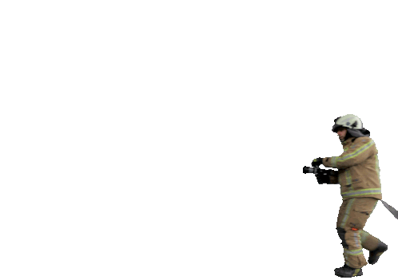
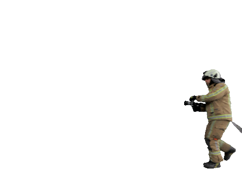

Главные заказчики снимков: МЧС, Белгидромет, Минобороны, Белгослес, Минсельхозпрод и другие структуры. Есть и зарубежные заказчики, которые просят заснять территорию интересующего их государства.
С помощью космического зонда специалисты обнаруживают тепловые аномалии, делают прогноз погоды и урожайности зерновых культур, отслеживают техногенные и природные чрезвычайные ситуации (пожары, паводки, наводнения), создают и обновляют топографические и навигационные карты, выявляют перспективные площадки для разработки полезных ископаемых

 
